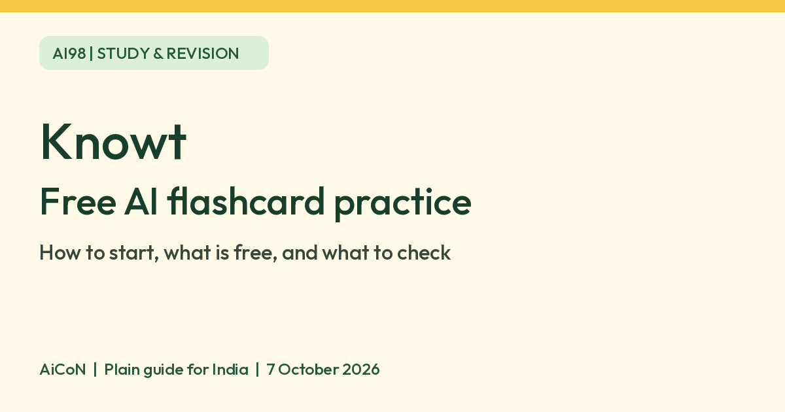

Knowt: free AI flashcard practice for students
Knowt is a study service with flashcards and AI-powered revision tools. Its Learn Mode is free for unlimited rounds, per Knowt. Start with your own checked cards rather than assuming every AI feature is unlimited.

What is Knowt?
A flashcard is a small question-and-answer card: a term on one side and its meaning on the other. Knowt lets you make these cards, study existing sets and practise using several question formats. Its official Learn Mode page describes an AI algorithm that chooses how to test you on each card.
Knowt also offers AI tools that make notes and flashcards from uploaded material. This guide focuses on the clearly verified free Learn Mode, not a promise of unlimited AI generation.
Why try it in Kerala or elsewhere in India?
For school, college or competitive-exam revision, you could make a small set from one chapter of your own textbook. For example, use a biology term as the question and a short definition from your class notes as the answer. This is a suggested use, not evidence that Knowt follows Kerala SCERT, CBSE, NEET or PSC syllabuses.
We verified a live India App Store listing. Knowt says its app is on iOS and Android, and its study service also works on the web. We did not test an Android installation in India. Malayalam support and alignment with Indian exam marking schemes were not verified.
How to start, step by step
- Open knowt.com and select Get Started.
- Enter your name, email and birthday, choose Student and pick a username. Verify your email with the code Knowt sends you. Its guide also offers Google or Apple sign-in.
- Use the green + button to create a flashcard set. For your first attempt, write a few terms and definitions yourself from a textbook you trust.
- Check the cards for spelling, facts and missing context before practising.
- Open the set from Materials and select Learn.
- Choose your question types, round length and other options, then select Start. You can choose flashcards, multiple choice, written answers or true/false.
- If you have an exam date, add it in the options so Knowt can pace the rounds toward it.
- Review your wrong answers against your notes. On the mobile app, open the set in Library, select Study flashcard set, then Learn.
Cost and limits
| Free verdict | Knowt says Learn Mode is free for all flashcard sets, for unlimited rounds. No paid plan is needed for that feature. |
|---|---|
| AI generation | Knowt offers AI Summarizers that turn PDFs, slides, images or videos into notes and cards. We did not verify a fixed free allowance for those tools, so do not assume they are unlimited. |
| Paid option | Knowt has paid subscriptions. The India App Store lists several different purchase amounts, so this guide does not present one as the current universal price. Check the total and billing period shown in your own checkout before paying. |
| India | The Indian App Store lists Knowt: AI Flashcards & Notes as free with in-app purchases. App listing verified, not hands-on installation. |
| Class sets | Teachers can lock Learn settings, so some options may be missing or greyed out. |
Use the grading carefully
Smart grading can ignore small differences such as typos, capitalisation or missing articles. You can turn it off for exact-match grading. Written answers can also be set to require retyping a correction. Knowt lets you override a wrong mark if the meaning was the same.
These are study aids, not an official examiner. Check important answers against your teacher or textbook. A well-formatted AI card can still contain an error. Avoid uploading private student records, identity documents or notes you do not have permission to share.
Checked official Learn Mode, getting-started and Learn instructions plus the India App Store listing on 7 October 2026. Confirmed AI-powered question selection, unlimited free Learn rounds, setup steps and app listing. Not tested: learning outcomes, answer accuracy, Malayalam support, Android India installation or AI-generation quotas.
Frequently asked questions
Is all of Knowt free?
No blanket claim is made here. Unlimited Learn Mode is verified as free. Knowt also sells subscriptions and has other AI tools whose free allowances were not verified.
Do I need AI-generated cards?
No. Make your own flashcards and practise them with Learn Mode. You can also import existing sets.
Can I use it for Kerala school exams or PSC?
You can choose to make cards from your own syllabus material. We did not verify syllabus-specific coverage or official exam approval.
Does it support Malayalam?
Malayalam study support was not verified. Test a small set before relying on it for a full chapter.
Why are some settings unavailable?
Knowt's help page says teachers can lock settings for a class or an individual set. Ask the teacher to check both.
Sources: Official Learn Mode page, Learn instructions, Getting started, Plans, India App Store. Checked 7 October 2026.